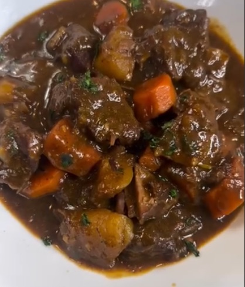

Irish Beef Stew

Original Recipe Source - @EatWitZo - Instagram
Ingredients
- 1kg Beef Chuck, Cut into Chunks
- 1kg Potatoes
- 3 Large Carrots
- 1 Large Onion
- 3 Celery sticks
- 3 Garlic Cloves
- Glass of Red Wine
- 1 tbps Tomato Purée
- 800ml Beef Stock
- Sprigs of Thyme
- Sprigs of Rosemary
- 3 Bay Leaves
- White & Black Pepper
- Onion and Garlic Powder
- 1 Heaped Tablespoon of Plain Flour
Method
- In a large bowl, liberally season the beef with the pepper, salt, onion powder, garlic powder, and a heaped tablespoon of flour. mix well to coat the beef.
- Heat some oil in a large heavy pot. Once hot, place the beef in the pot, searing to seal (a few minutes on each side). do this in batches and set aside as each batch is finished.
- In the same pot, add the onions, celery, garlic and tomato paste and fry for a few minutes.
- Pour in the wine and allow to simmer uncovered for a while until the wine reduces and thickens a bit.
- Pour in the beef stock and add the beef chunks back in. Season as required and add in the rosemary, thyme, and bay leaves. cover and leave to simmer for atleast 1.5 hours.
- Add in the potatoes and carrots. Cover and let simmer for further 1-1.5 hours.
- Once the mixture has reached the desired consistency, remove from the heat and let sit for a few minutes before serving sprinkled with parsley and with buttered brown bread for dipping on the side.